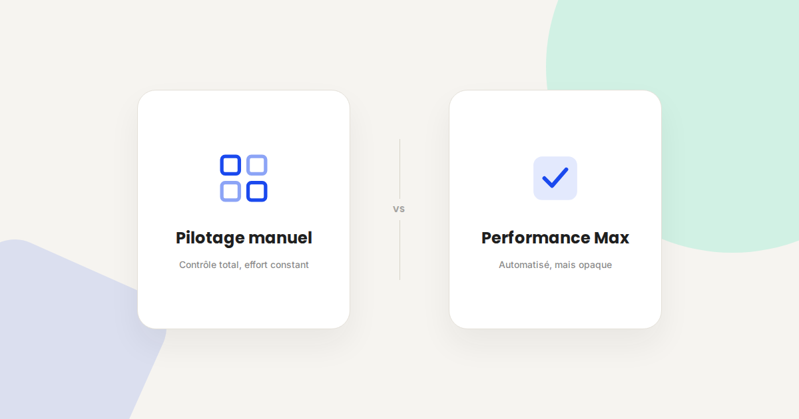
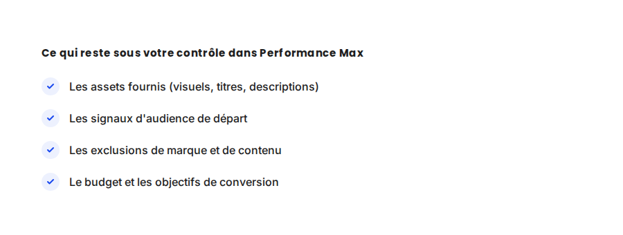

Performance Max : reprendre la main sur une boîte noire publicitaire
Performance Max promet de la performance sans effort de pilotage : un budget, des assets, et l'algorithme fait le reste. Dans les faits, c'est surtout une boîte noire qui peut très bien fonctionner — ou consommer un budget sur les mauvais signaux sans que rien ne l'indique. Voici ce qui reste entre vos mains.

Performance Max (PMax) est devenu, en quelques années, le format par défaut que Google pousse pour la majorité des annonceurs. La promesse est simple : un seul budget, tous les canaux (Search, Display, YouTube, Gmail, Maps, Shopping), et un algorithme qui optimise les enchères en temps réel. Dans mes audits, c'est souvent la campagne la plus rentable du compte — et aussi la plus difficile à expliquer quand elle ne l'est pas.
Ce qui ne change pas
Un algorithme de Google Ads, aussi sophistiqué soit-il, reste dépendant de la qualité de ce qu'on lui donne à optimiser. Une page de destination lente ou peu convaincante continue de plomber le taux de conversion, quel que soit le format de campagne. Un tracking de conversion imprécis continue d'envoyer de mauvais signaux à l'algorithme — avec PMax, l'effet est même amplifié, puisque l'IA optimise directement sur ces signaux sans intervention humaine pour les corriger en cours de route.
Ce qui change vraiment avec Performance Max
- Vous ne choisissez plus les canaux, seulement les objectifs. Impossible de dire « plus de Display, moins de Shopping » comme sur des campagnes séparées : l'algorithme répartit lui-même le budget selon ce qui convertit, sans distinction visible par canal dans les rapports standards.
- Le reporting devient granulaire uniquement si vous le demandez. Les rapports de composants d'assets (par visuel, par titre) existent mais ne sont pas actifs par défaut — sans eux, impossible de savoir quel asset tire la performance et lequel la plombe.
- Les signaux d'audience ne sont que des suggestions. Contrairement aux campagnes classiques, les listes d'audience fournies dans PMax ne ciblent pas strictement : elles orientent l'algorithme en début de campagne, qui peut ensuite s'en éloigner librement s'il trouve mieux ailleurs.
- La cannibalisation avec le SEO ou les campagnes de marque est fréquente et invisible. PMax peut capter des clics sur des requêtes de marque que vous auriez eues gratuitement en organique, sans qu'aucun rapport ne le signale explicitement — il faut croiser avec Search Console pour le voir.

Un exemple qui illustre bien la différence
Sur un compte que j'ai audité récemment, PMax affichait un excellent ROAS global — de quoi satisfaire n'importe quel tableau de bord. En creusant le rapport d'exclusion de marque, plus de 30 % du budget partait en réalité sur des recherches de marque que le site captait déjà gratuitement en première position organique. Le ROAS affiché était réel, mais l'incrémentalité — le chiffre d'affaires réellement généré en plus — était bien plus faible que ce que le tableau de bord laissait penser.
Ce qu'il faut faire concrètement pour garder la main
- Excluez systématiquement votre trafic de marque via les listes d'exclusion de mots-clés de marque, disponibles depuis 2023 — sans ça, PMax se sert en priorité sur ce qui convertit le plus facilement, votre propre nom.
- Activez le rapport d'assets par composant dès le lancement, pas après trois mois : c'est la seule fenêtre qui montre quel visuel ou quel titre porte réellement la campagne.
- Fournissez des signaux d'audience précis dès le départ (audiences personnalisées, clients existants) — l'algorithme part plus vite dans la bonne direction, même s'il finit par s'en détacher.
- Comparez le ROAS PMax à un scénario sans PMax sur une période test, en coupant temporairement la campagne sur un segment, pour mesurer l'incrémentalité réelle plutôt que le chiffre brut du tableau de bord.
FAQ
Performance Max remplace-t-il toutes les autres campagnes Google Ads ?
Non. Les campagnes Search classiques restent utiles pour un contrôle fin sur des mots-clés spécifiques à forte valeur, en particulier en B2B. PMax s'ajoute, il ne remplace pas systématiquement.
Comment savoir si Performance Max cannibalise mon trafic de marque ?
Comparez les clics de marque dans le rapport de termes de recherche (quand disponible) ou le rapport d'exclusion de marque à votre trafic organique de marque dans Search Console : une baisse simultanée de l'un et hausse de l'autre est un signal clair.
Faut-il donner beaucoup d'assets à Performance Max pour qu'il fonctionne bien ?
La quantité compte moins que la qualité et la variété des angles. Un jeu de 5 à 8 assets bien différenciés, avec un vrai contraste de messages, performe mieux qu'une vingtaine de variations proches les unes des autres.
Envie d'un audit de vos campagnes Performance Max ?
Pour aller plus loin, voir la page SEA, la page Google Ads petit budget, et la page Analytics.
Pour continuer sur ce sujet.